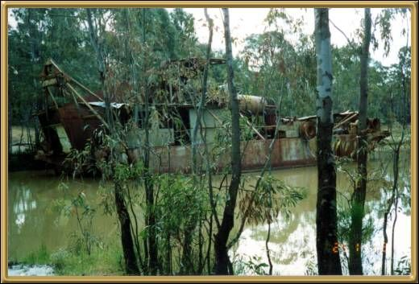

This is an old gold-mining dredge at Daylesford. No gold mining is done there now though. There are over 65 mineral springs in the area, and the town itself is quite picturesque.
Photographer: Jean Stokes